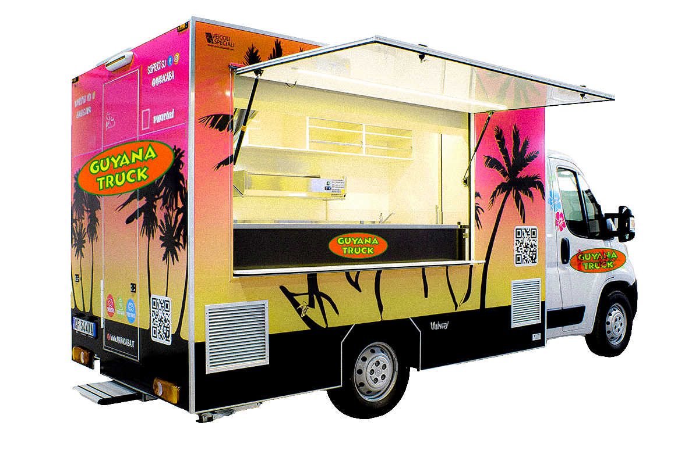

Welcome to “Guyana Truck” - Where Exotic Flavors Meet Street Food Sensations!
Get ready to embark on a culinary journey like no other as we proudly present “Guyana Truck,” a one-of-a-kind food truck that brings the vibrant and diverse tastes of Guyanese cuisine to your city streets. With a menu that celebrates the rich cultural tapestry of Guyana, our food truck promises to tantalize your taste buds and transport you to the heart of the Caribbean.
At “Guyana Truck,” we’ve carefully curated a menu that showcases the very best of Guyanese avors, crafted with love and authenticity. From traditional favorites that evoke nostalgia to innovative twists that add a modern air, every dish on our menu tells a story of heritage and passion.
Indulge in the tantalizing aroma of our signature “Roti and Curry.” Savor the tender, perfectly spiced meats or avorful vegetarian options, all enveloped in soft, aky roti, making every bite a delight. If you’re seeking a taste of street food heaven, our “Pholourie and Mango Chow” combo is a must-try - golden, savory fritters paired with tangy, juicy mango chow create an explosion of avors in your mouth.
But that’s not all; we’re bringing the iconic avors of Guyanese street snacks to your ngertips. Whether it’s the beloved “Aloo Pie” or the irresistible “Chicken Puri,” our food truck’s array of snacks is sure to leave you craving for more.
At “Guyana Truck,” we believe that food is not just sustenance; it’s a celebration of culture and a bridge that connects people. That’s why every dish is prepared with passion and care, just like a home-cooked meal that transports you back to your roots.
So, whether you’re a curious food adventurer or a seasoned connoisseur of Guyanese cuisine, “Guyana Truck” promises an unforgettable experience. Come join us on this avorful journey through Guyana’s culinary wonders. Your taste buds will thank you, and your heart will nd a piece of Guyana right here on the streets!